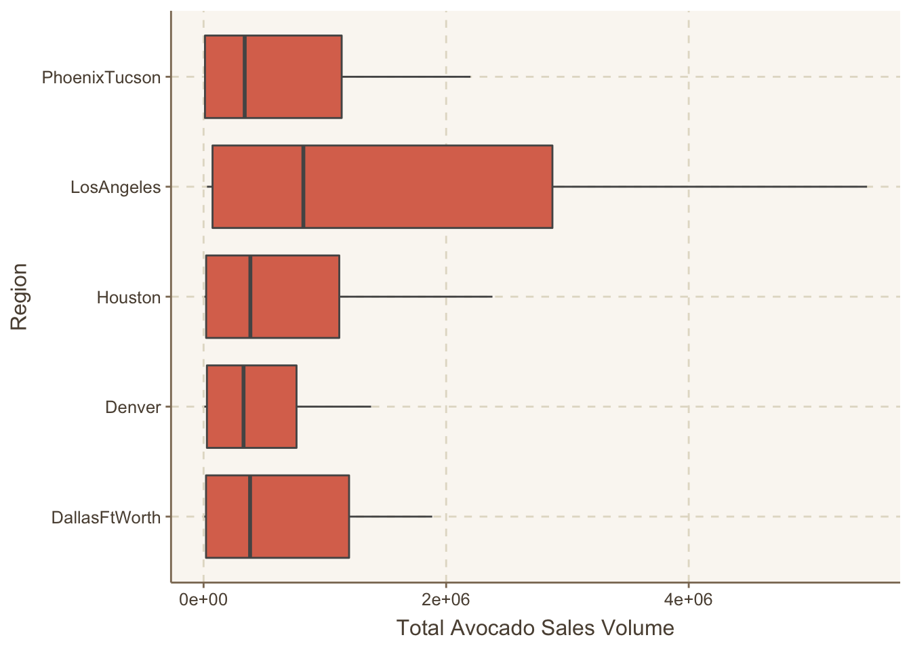
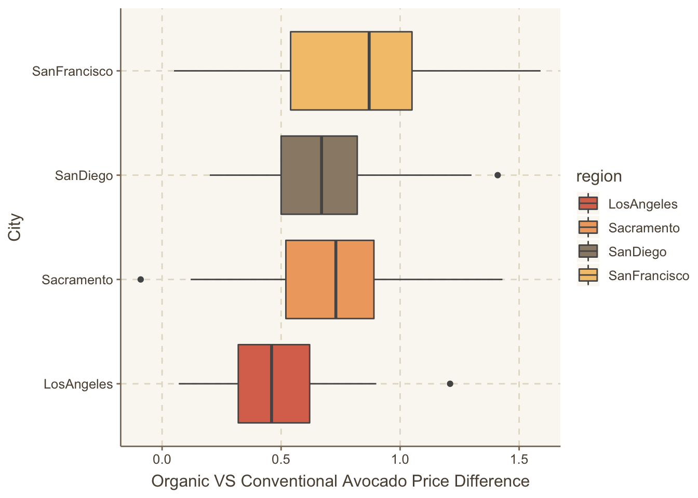

library(tidyverse)
library(here)
library(ggthemr)Lab 4
Set-Up
Data
- The avocado data set includes prices (average price is reflected as the per unit price) and sales volumes (per unit) of Hass avocados sold in the US (in grocery, mass, club, drug, dollar, and military stores) by date (from 2015 to 2018), size, region, and type (conventional or organic). The data has 18,249 rows (corresponding to a single region during a single year for a particular avocado type) and 14 columns.
avocado <- read_csv(here::here("supporting_artifacts", "supporting_data", "avocado.csv"))Data Cleaning
2.
To deal with the multiple categories of regions in my data set, I will create two data frames, one for all of the major regions and one for all of the states, which I can then use with semi_join() and anti_join() to separate major regions, states, and metropolitan areas..
major_regions <- data.frame(
major_region = c("SouthCentral", "Northeast", "Midsouth",
"Southeast", "Plains", "West", "GreatLakes",
"WestTexNewMexico"))
states <- data.frame(state = c("California", "NewYork",
"SouthCarolina"))
avocado <- avocado |>
filter(region != "TotalUS") |>
rename(small = `4046`, large = `4225`, xlarge = `4770`)3.
avocado |>
semi_join(y = major_regions, by = c("region" = "major_region")) |>
filter(type == "organic", year == 2017) |>
group_by(region) |>
summarise(total_small = sum(small)) |>
slice_max(order_by = total_small)# A tibble: 1 × 2
region total_small
<chr> <dbl>
1 West 1870206.The region that sold the most organic, small Hass avocados in 2017 was the West, which sold 1,870,206 avocados during that year.
4.
avocado |>
separate(Date, c("year", "month", "day"), sep = "-") |>
group_by(month) |>
summarise(total_volume = sum(`Total Volume`)) |>
slice_max(order_by = total_volume, n = 1)# A tibble: 1 × 2
month total_volume
<chr> <dbl>
1 02 1094903687.Month 02, February, is the month that had the highest volume of avocado sales.
5.
ggthemr(palette = 'dust')
avocado_met <- avocado |>
anti_join(y = major_regions, by = c("region" = "major_region")) |>
anti_join(y = states, by = c("region" = "state"))
avocado_met_highest <- avocado_met |>
group_by(region) |>
summarise(mean_vol = mean(`Total Volume`)) |>
slice_max(order_by = mean_vol, n = 5)
avocado_met <- avocado_met |>
semi_join(avocado_met_highest, by = c("region" = "region"))
ggplot(data = avocado_met) +
geom_boxplot(mapping = aes(x = `Total Volume`, y = region)) +
labs(y = "Region", x = "Total Avocado Sales Volume")
6. When I first attempted this problem, I couldn’t figure out how to use pivot_wider without summarizing the means first. This meant that my only option for visualization was a bar or column, which really didn’t offer a lot of information and may have been confusing. I realized after a lot of trial and error that I couldn’t use pivot_wider without uniquely identifying the columns because each row is identified by the region AND the type. After a lot of searching, I found that I could correct this issue by creating row numbers AFTER using the group_by function with my key identifiers.
ca_city = data.frame(city = c("LosAngeles", "SanDiego", "Sacramento", "SanFrancisco"))
avocado_ca <- avocado |>
semi_join(ca_city, by = c("region" = "city")) |>
select(region, type, AveragePrice) |>
group_by(region, type) |>
mutate(row = row_number()) |>
pivot_wider(names_from = type,
values_from = AveragePrice) |>
mutate(price_difference = organic - conventional) |>
select(region, conventional, organic, price_difference)
# summary statistics
avocado_ca |>
summarise(across(.cols = c(conventional:price_difference),
.fns = mean,
.names = "mean_{.col}"))# A tibble: 4 × 4
region mean_conventional mean_organic mean_price_difference
<chr> <dbl> <dbl> <dbl>
1 LosAngeles 0.976 1.46 0.479
2 Sacramento 1.27 1.97 0.695
3 SanDiego 1.06 1.73 0.673
4 SanFrancisco 1.40 2.21 0.814# visualization
ggplot(data = avocado_ca) +
geom_boxplot(mapping = aes(x = price_difference, y = region, fill = region)) +
labs(x = "Organic VS Conventional Avocado Price Difference", y = "City")
San Francisco had the highest price difference between organic and conventional avocados, where organic avocados are 1.8636364times the price of conventional.
Help to create unique row identifier using row_number() is from https://stackoverflow.com/questions/58837773/pivot-wider-issue-values-in-values-from-are-not-uniquely-identified-output-w
7.
ggthemr_reset()
avocado_mean <- avocado |>
semi_join(ca_city, by = c("region" = "city")) |>
group_by(region, type) |>
summarise(across(.cols = c(`Total Volume`, xlarge, large, small),
.fns = mean,
.names = "mean_{.col}"),
.groups = "keep") |>
rename(average_total = `mean_Total Volume`,
`Extra Large` = mean_xlarge,
Large = mean_large,
Small = mean_small) |>
pivot_longer(cols = `Extra Large`:Small,
names_to = "size",
values_to = "sale_volume") |>
mutate(proportion = sale_volume / average_total)
ggplot(data = avocado_mean) +
geom_col(mapping = aes(x = region, y = proportion, fill = size),
position = "fill") +
facet_wrap(. ~ type) +
guides(x = guide_axis(n.dodge = 2),
fill = guide_legend(title = "Avocado Size")) +
labs(x = "Region of CA",
y = "Proportion of Avocados Sold",)
I learned the guides() function from https://ggplot2.tidyverse.org/reference/guide_axis.html and https://stackoverflow.com/questions/14622421/how-to-change-legend-title-in-ggplot